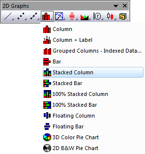

Gestapeltes Säulendiagramm
Stack-Column-Graph

Datenanforderungen
Wählen Sie mindestens eine Y-Datenspalte (oder einen Bereich aus mindestens einer Spalte) aus. Wenn es eine verbundene X-Spalte gibt, stellt die X-Spalte die X-Werte bereit; ansonsten wird ein Abtastintervall der Y-Spalte oder Zeilennummer verwendet.
Diagramm erstellen
Wählen Sie die gewünschten Daten aus.
Wählen Sie im Menü .
oder
Klicken Sie auf die Schaltfläche Gestapelte Säulen in der Symbolleiste 2D Grafiken.

Vorlage
COLUMN.OTP (im Origin-Programmordner installiert).
Hinweise
- Für jeden X-Wert bilden die Y-Werte die Höhe der Säulen ab. Jeder Säule besitzt eine feste Breite. Die Säulen werden jedoch vertikal aufeinander gestapelt, so dass die zweite Säule am Ende der ersten Säule beginnt usw. Der Säulenstapel wird am zugehörigen X-Wert zentriert. Um die Säulen ungestapelt anzuzeigen, wählen Sie bitte .
- Um eine Linie bei Y=0 anzuzeigen, aktivieren Sie auf der Registerkarte Grafik das Kontrollkästchen Nullwert im Balkendiagramm im Dialog Optionen ().